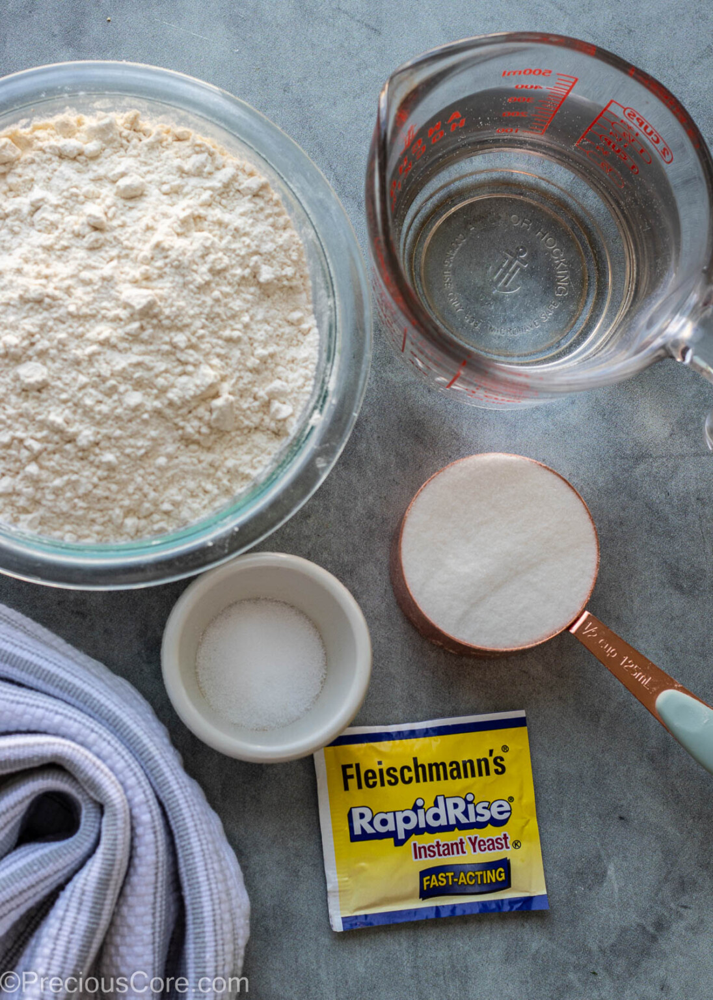
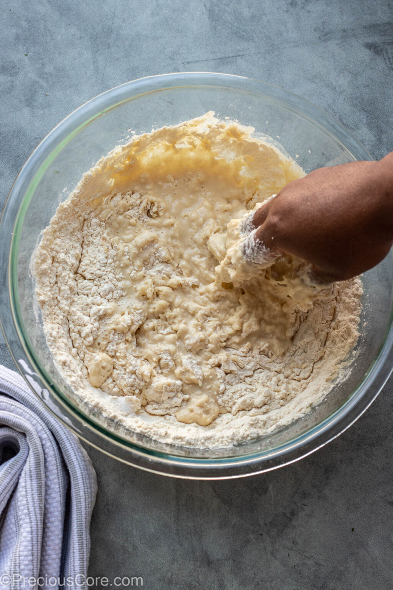
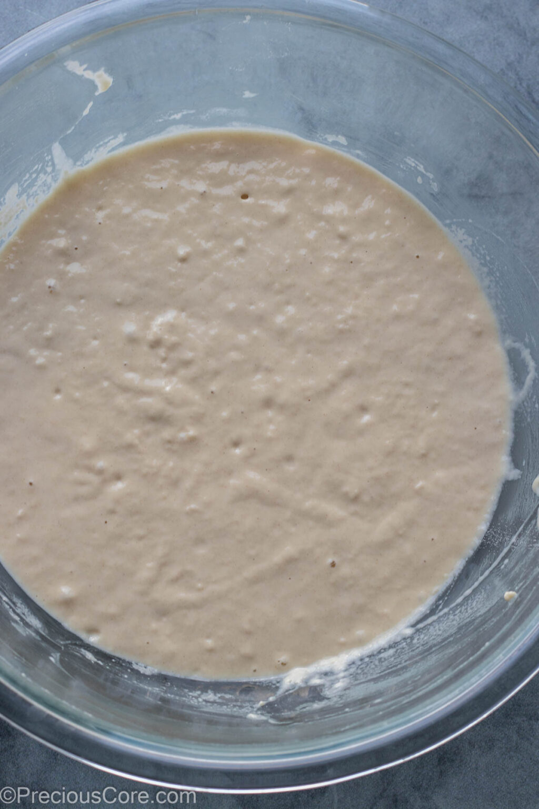
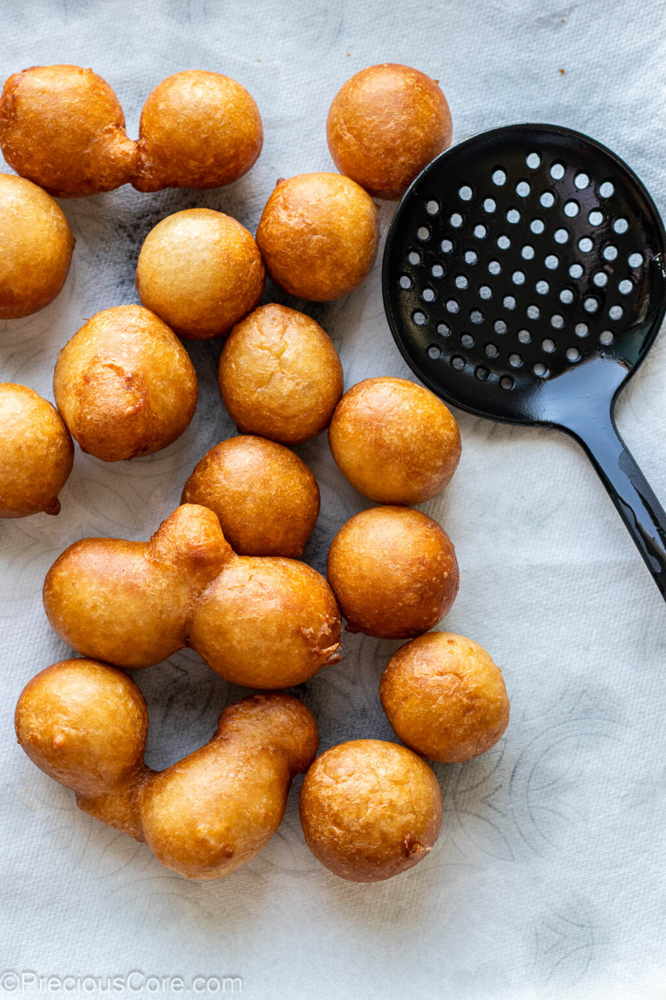
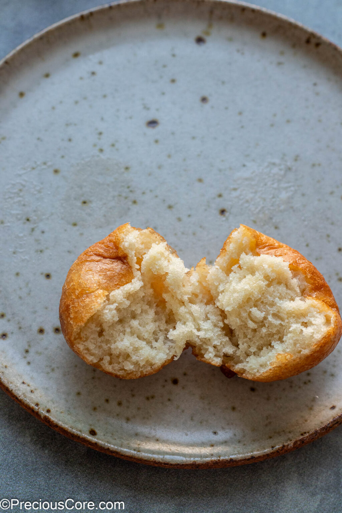

Serving Size
10–12 pieces
Prep Time
1 hr 5 mins
Cook Time
5 mins
Total Time
1 hr 10 mins
Ingredients
- 1 cup of sugar
- 1 tsp of nutmeg
- 2.5 cups of warm water
- 4.5 tsp of fast-acting yeast
- 3 cups of all-purpose flour
Cooking Materials
Instructions
-
In a large bowl, combine sugar, nutmeg, warm water, and yeast. Let it sit for about 5 minutes, or
until frothy.

-
Gradually add the flour, mixing until a soft dough forms.

-
Cover the bowl with a clean cloth and let it rise in a warm place for about 1 hour, or until doubled
in size.

-
Heat oil in a deep fryer or large pot to 350°F (175°C). Using a spoon, drop small balls of dough
into the hot oil.
-
Fry until golden brown, about 5 minutes, turning occasionally.

-
Remove and drain on paper towels.
